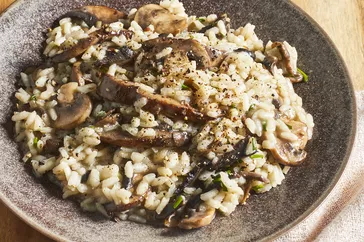

Gourmet Mushroom Risotto

Authentic Italian-style risotto cooked the slow and painful way, but-oh so worth it. Complements grilled meats and chicken dishes very well
Risotto ranks right up there as one of the greatest dishes you can make with rice. Originating in Italy, risotto is a recipe made by simmering a starchy variety of rice in broth, with flavor-boosting ingredients added like onions, garlic, vegetables, meats, spices, herbs, and cheese. This 5-star recipe for mushroom risotto has thousands of ratings and reviews, and is a top-rated favorite for our Allrecipes community of home cooks.
There are all kinds of tasty add-ins to risotto, and mushrooms are just one of them. Mushrooms add an earthy, savory flavor to risotto that makes it a good complement to main dishes like roast chicken, pork, or beef. You can serve mushroom risotto as a side dish, a main dish, or a starter to a multi-course Italian menu.
Ingredients
- Chicken broth
- Olive oil
- Mushrooms
- Shallots
- Arborio Rice
- White wine
- Butter
- Parmesan cheese
- Chives
Steps
- Keep the broth hot the whole way through. Measure out a little more into the broth pot than the recipe says to make up for evaporation as it sits.
- An essential step to making risotto is to toast the grains in hot oil until they start to turn translucent around the edges. This could take a couple of minutes. Stir continuously during this process.
- Yes, you stir risotto as it simmers. That's what helps release the starch from the grains of rice to make that creamy texture you want.
- Keep the broth hot and the risotto at a low simmer throughout.
- Risotto is done when the rice is al dente: firm but not crunchy when you bite into it. It should not be as dry as steamed rice, but should have enough liquid to make it loose. Add just a touch more broth if needed before stirring in the butter and Parmesan cheese.
- Risotto waits for no one. It will continue to cook as it sits even when it's off the heat, so be prepared to dish it up right away.